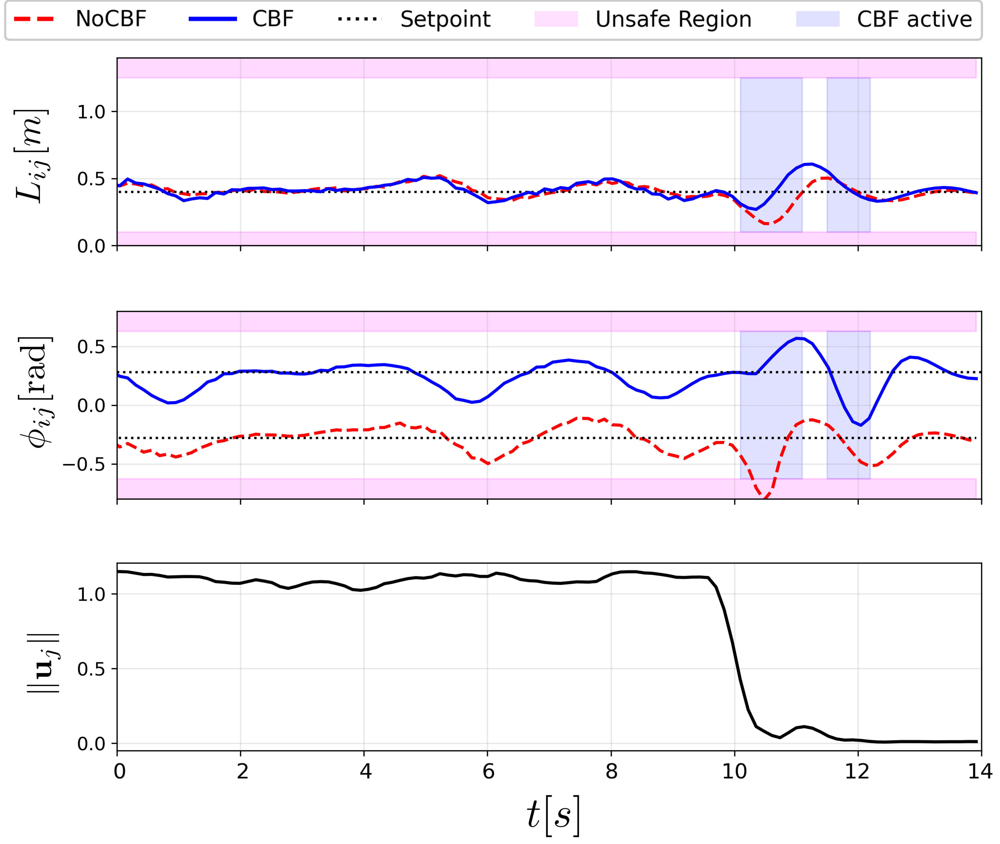

Gazebo Simulation
Confined cave scenario with conflicting formation objectives.
Conflicting Objectives
Abrupt Leader Motion
This letter proposes a distributed 3D leader-follower formation~(3D-LFF) control framework for multi-UAV systems that achieves formation tracking while enforcing perception safety constraints. Maintaining safe, vision-based 3D-LFF is challenging because onboard cameras impose strict Field-of-View (FOV) limitations, and aggressive maneuvers or demanding formation commands can drive the leader outside the follower's camera frustum, resulting in loss of visibility.
To address this issue, we develop a perception-aware safe control architecture that guarantees visibility by construction. First, we derive a relative kinematic model in a line-of-sight coordinate representation and design a distributed 3D-LFF tracking controller using only locally available relative states. Next, we embed the nominal formation controller within a Control Barrier Function-based Quadratic Program (CBF-QP) safety filter that minimally modifies the commanded setpoints to maintain the leader inside the follower’s camera frustum while preserving formation tracking whenever feasible.
Gazebo simulations and Crazyflie hardware experiments validate the proposed approach, demonstrating accurate formation tracking and effective FOV enforcement, including scenarios in which the nominal desired formation conflicts with visibility constraints.

In GPS-denied environments, formation performance depends critically on the follower's ability to estimate the leader's relative state using onboard sensing. Therefore, we need a control framework that relies only on local relative-state \( \mathbf{x}_{ij} = [L_{ij}, \phi_{ij}, \xi_{ij}, \alpha_{ij}]^\top \) information to achieve 3D leader-follower formation tracking while explicitly enforcing camera-frustum (magenta frustum) visibility constraints.

We propose a novel relative 3D kinematic formulation in spherical coordinates that captures the camera-to-leader geometry (including relative heading) and yields a distributed 3D-LFF nominal controller based solely on local relative states. We pair this controller with areal-time CBF-QP perception-aware safety filter that enforces the follower camera frustum-FOV and depth limits-by minimally modifying the nominal formation commands, thereby guaranteeing continuous visibility while preserving tracking whenever feasible.
Confined cave scenario with conflicting formation objectives.
Conflicting Objectives
Abrupt Leader Motion
Real-world flight validation using Crazyflie 2.1 brushless UAVs.
Flight Validation - Test 1

Three-Stages Task

Abrupt Leader Motion

Three-Stages Task
Comparison: The CBF-equipped follower (blue) maintains states within safe bounds compared to the unconstrained (NoCBF) baseline.
@article{park2021nerfies,
author = {Park, Keunhong and Sinha, Utkarsh and Barron, Jonathan T. and Bouaziz, Sofien and Goldman, Dan B and Seitz, Steven M. and Martin-Brualla, Ricardo},
title = {Nerfies: Deformable Neural Radiance Fields},
journal = {ICCV},
year = {2021},
}